O que está dentro ainda não aparece fora.
Um retrato de como Tríade e Domini se apresentam hoje ao mercado, lido à luz da estratégia que vocês mesmos já definiram.
A arquitetura de marca existe e está clara para quem conduz o negócio. A presença pública ainda conta uma versão anterior: a Domini segue falando como "projetos de vida" de primeiro imóvel, e a Tríade aparece ao mercado quase só como imobiliária de locação. O ciclo que une as duas não é contado em lugar nenhum.
Essa leitura confirma o que surgiu na nossa conversa: o pedido começou como uma apresentação comercial e logo virou "precisamos alinhar tudo".
Cruzamos duas fontes. A primeira é a presença pública: sites e Instagrams das duas marcas e das marcas de produto, visitados em 29 e 30 de outubro de 2026. A segunda é o material interno que vocês nos enviaram: o estudo de arquitetura de marcas, manuais, logos, apresentações e portfólios. As evidências aparecem em prints ao longo da página.
Como o ecossistema aparece hoje
Sete pontos de contato, três nomes diferentes para a Tríade e nenhum canal que apresente o ecossistema inteiro.
| Canal | Como se apresenta | Fala com | Observação |
|---|---|---|---|
Tríadetriadebr.com.br | "Tríade Brasil · Inteligência Patrimonial" | Investidor, acionista | Texto denso e técnico em Soluções; só 3 projetos listados; rodapé © 2023 |
Tríadetriadebrlocacoes.com.br | "Triade Brasil Gestão Imobiliária Ltda · imobiliária em Florianópolis" (sem acento, razão social no título) | Locatário comercial | Template padrão de imobiliária; CRECI em branco no rodapé |
Tríade@triadebrlocacoes | Nome "Tríade Brasil"; bio "Inteligência Patrimonial & Locações de Imóveis Comerciais" | Locatário (saúde, Ekos) | 57 posts · 931 seguidores. Único perfil da Tríade, e o @ diz "locações" |
Dominidominiprojetosdevida.com.br | "Domini Projetos de Vida · seu jeito de viver" | Comprador pessoa física, genérico | Descreve a Domini fazendo a cadeia inteira, inclusive o papel da Tríade |
Domini@domini_projetosdevida | "Construtora e incorporadora · projetos com propósito de vida" | Comprador do lançamento | 327 posts · 3.712 seguidores. Feed recente tomado pelo Alma Gramado |
Produtoalmagramado.com.br | "Alma Gramado · A atmosfera que eleva seu viver" | Família madura, alto padrão | Linguagem já madura; hotsite próprio |
Produtoalmamorrodaspedras.com.br | Alma Morro das Pedras (Florianópolis) | Lançamento em breve | Segunda praça da linha Alma |
A marca-mãe fala a língua antiga; o produto já fala a nova
- "Projetos de Vida" está gravado em tudo.Domínio, @, assinatura do logo, título de todas as páginas, nome da seção de empreendimentos. É a herança do período de primeiro imóvel, e hoje prende o nome a um posicionamento que a empresa já deixou para trás.
- Duas marcas disputando a mesma tela.Ao abrir o site, o popup do Alma Gramado mostra uma mulher madura, preto e branco, serifa elegante, "a atmosfera que eleva seu viver". Fechado o popup, a home da Domini mostra uma jovem deitada no sofá com o script "seu jeito de viver". O produto está à frente da marca que o assina.
- O site atribui à Domini o papel da Tríade."O que fazemos" lista Pesquisa (inovação, conceituação, viabilidade), Projetos, Incorporação, Construção e Investimento Imobiliário, com convite a investidores. Pela arquitetura de marca, pesquisa, viabilidade e captação são da Tríade. Quem lê o site da Domini não tem por que procurar a Tríade.
- "Quem somos" descreve outra empresa.Fala em trajetória desde 2002 e portfólio de franquias, hotéis, vinícolas, hipermercados e indústrias, ou seja, uma construtora prestadora de serviço. Nada sobre a incorporadora residencial de unidades maiores para famílias maduras.
- Portfólio sem curadoria.11 entregues, sendo 7 em Caxias do Sul (Trip, Sweet, Face, After, Zenith, Advance, Neville) da fase de primeiro imóvel, misturados com Ekos, SKY 405 e Oka, que são projetos comerciais e aparecem também no site da Tríade. A lista não separa fases, tipologias nem papéis, e é exatamente o material que falta quando o time vai às imobiliárias.
- O Instagram virou canal do lançamento.O feed recente é quase todo Alma Gramado, com linguagem alpina, serifada, em preto e branco, muito bem resolvida. Como peça de produto, funciona. Como perfil institucional, a Domini desaparece: nada diz quem ela é hoje, e a bio ainda repete "propósito de vida".
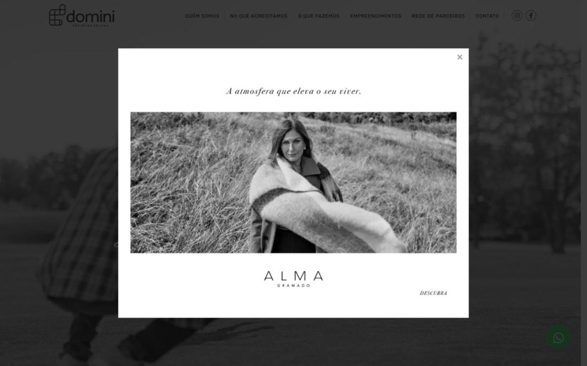
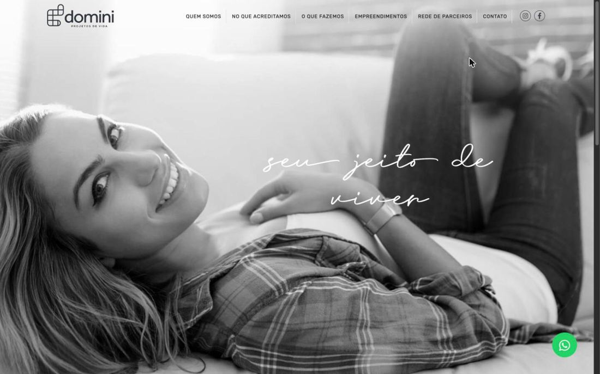
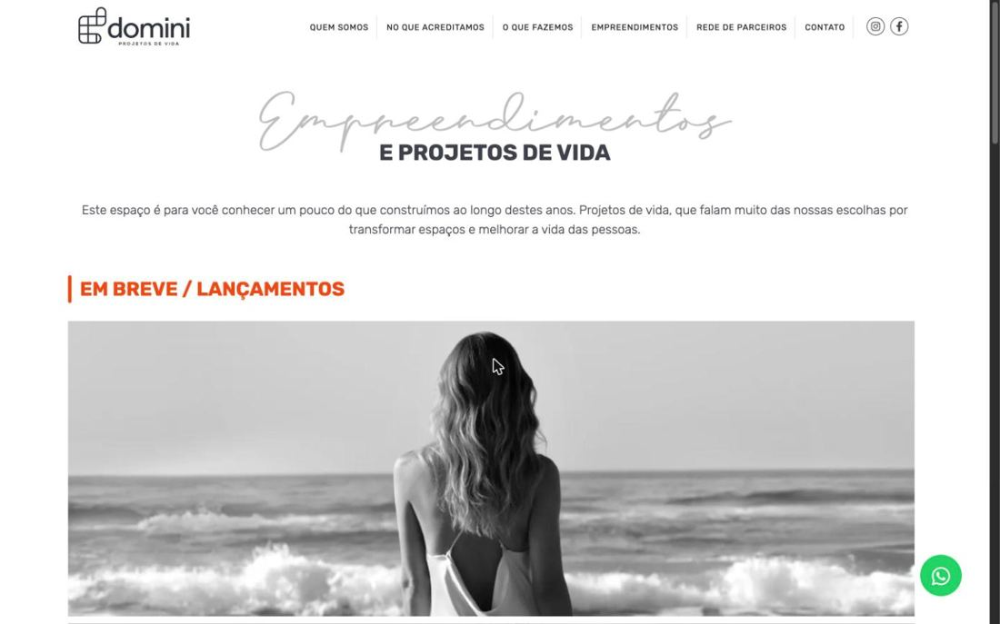
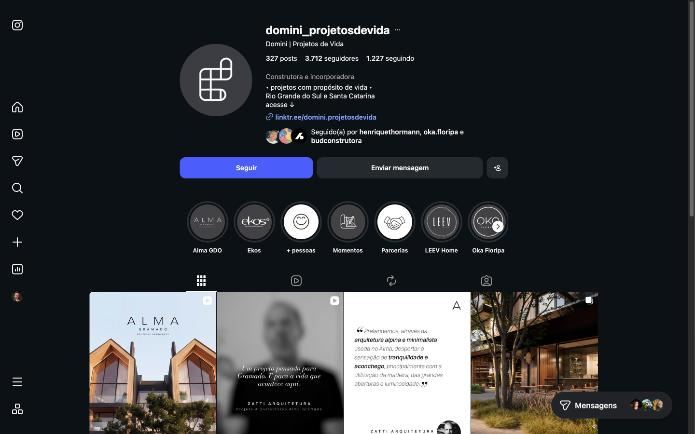
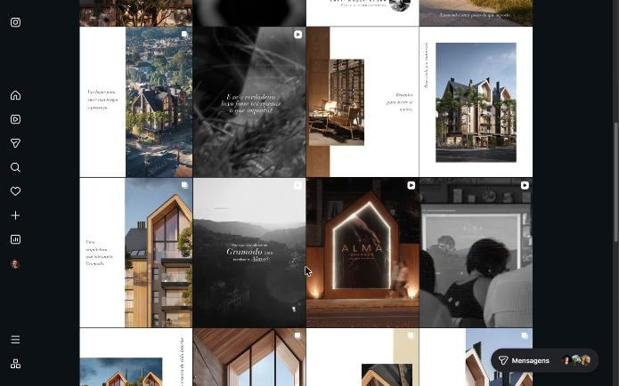
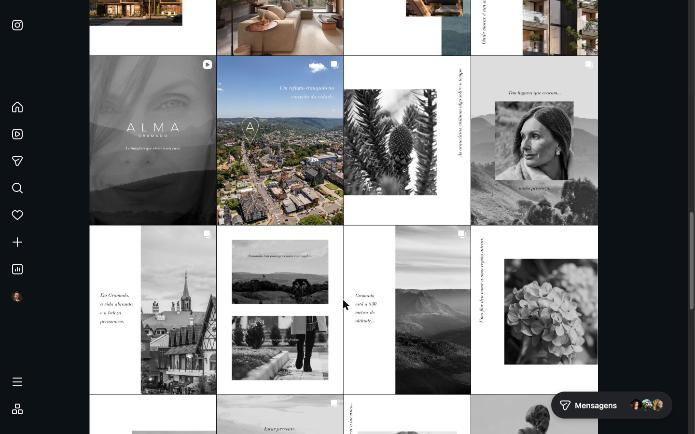
Ao mercado, ela parece só uma imobiliária
- O único Instagram é o de locações.O @ é
triadebrlocacoese o conteúdo é locação de salas (Ekos, clínicas, Summit Saúde). A Tríade que estrutura negócios, faz viabilidade, capta investidores e entrega o projeto pronto para a Domini não existe nas redes. - Três nomes para a mesma empresa."Tríade Brasil", "Tríade Brasil Inteligência Patrimonial" e "Triade Brasil Gestão Imobiliária Ltda", sem acento e com a razão social como título do site de locações. Para quem pesquisa, não fica claro se é uma empresa ou várias.
- O site institucional é bom no texto e fraco na prova.Soluções detalha bem as três etapas das operações estruturadas, a gestão imobiliária e a consultoria. Mas "Projetos" mostra só SKY 405, Oka e Ekos, todos no Campeche. Para abrir carteira a complexos e clientes de fora em 2027, o portfólio não sustenta o discurso.
- A arquitetura de marca está escrita, mas escondida.A página
/dominiapresenta a Domini como "expressão criativa e humana do ecossistema" e separa bem os papéis. É o melhor texto de marca de todo o ecossistema, e fica num item de menu, com meta description de uma letra ("a"). - Sinais de desatualização.© 2023 no rodapé do site institucional e CRECI vazio no rodapé do site de locações.
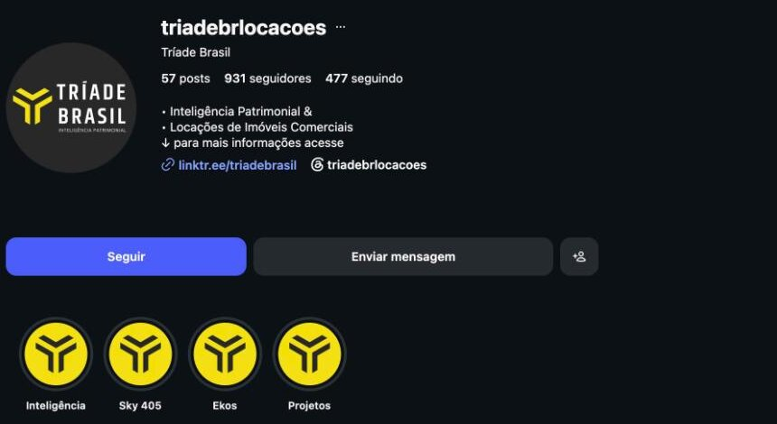
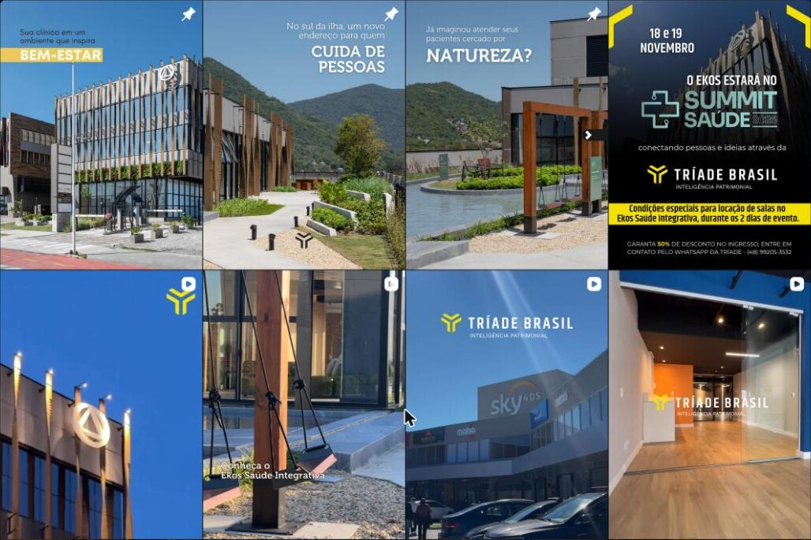
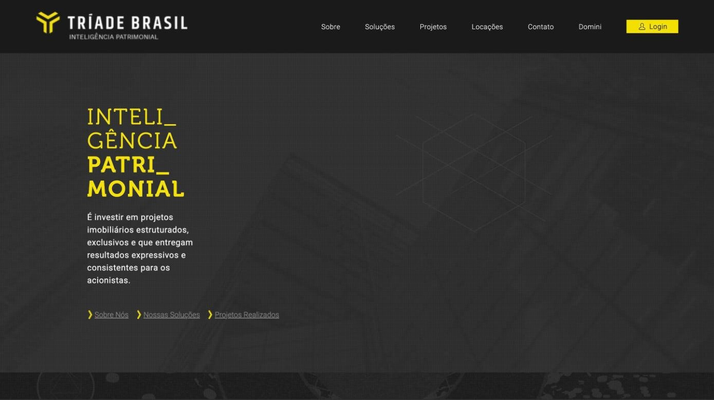
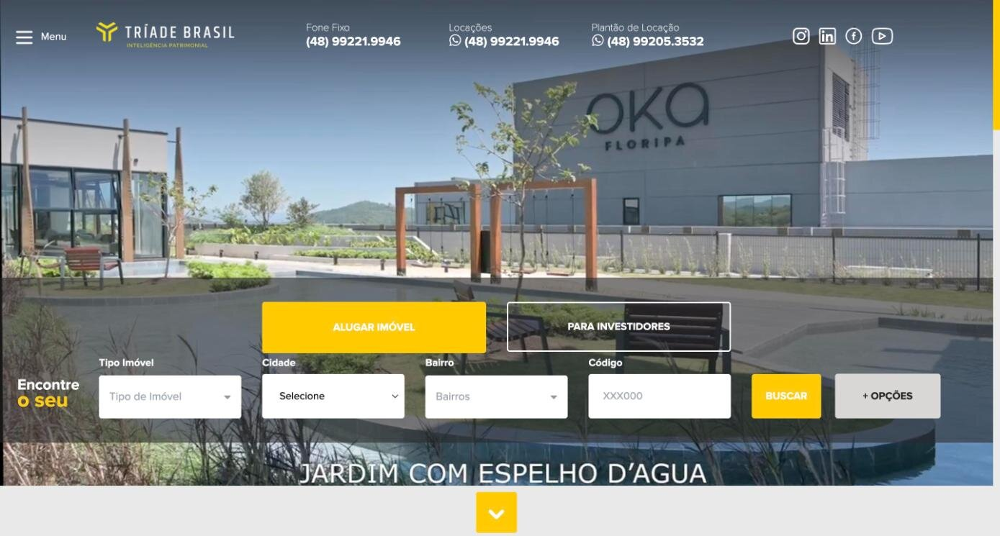
A estratégia está decidida. A expressão ainda não.
O estudo "Arquitetura das marcas" (58 páginas, construído com os diretores, 9 entrevistas internas e 8 externas) responde a uma dor que vocês mesmos registraram: "não sabemos qual é a nossa marca principal". A decisão foi endosso leve + cobrand, com a Domini como motor. A síntese diz que não se trata de um grupo, e sim de uma estrutura única com duas marcas, em que a Tríade é a holding da qual a Domini faz parte.
O que ainda falta é tudo o que vem depois da decisão: regras de assinatura, lockups conjuntos, o que cada marca diz e mostra, e um sistema visual que torne o endosso visível. No próprio documento, as marcas na atuação individual aparecem como X® e Y®, ainda como marcadores.
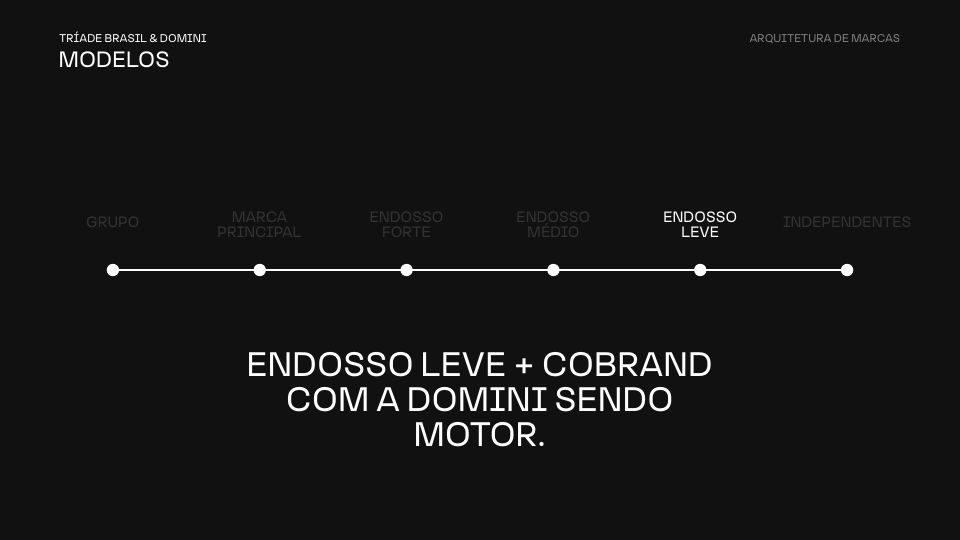
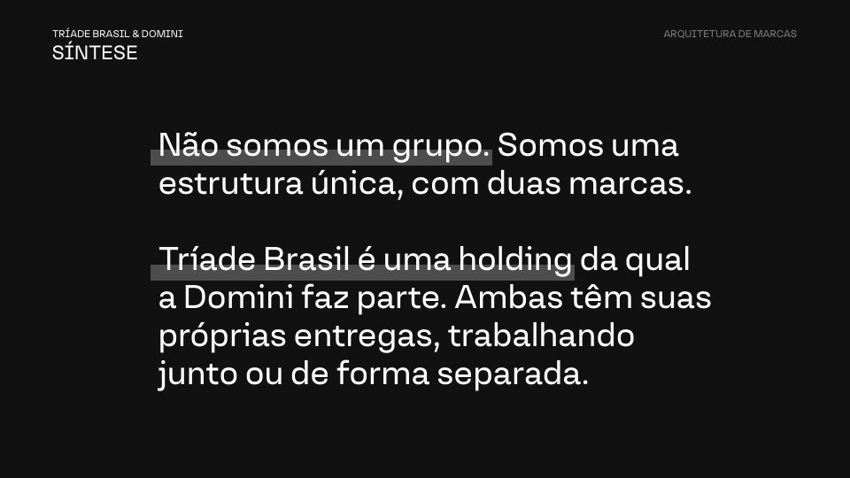
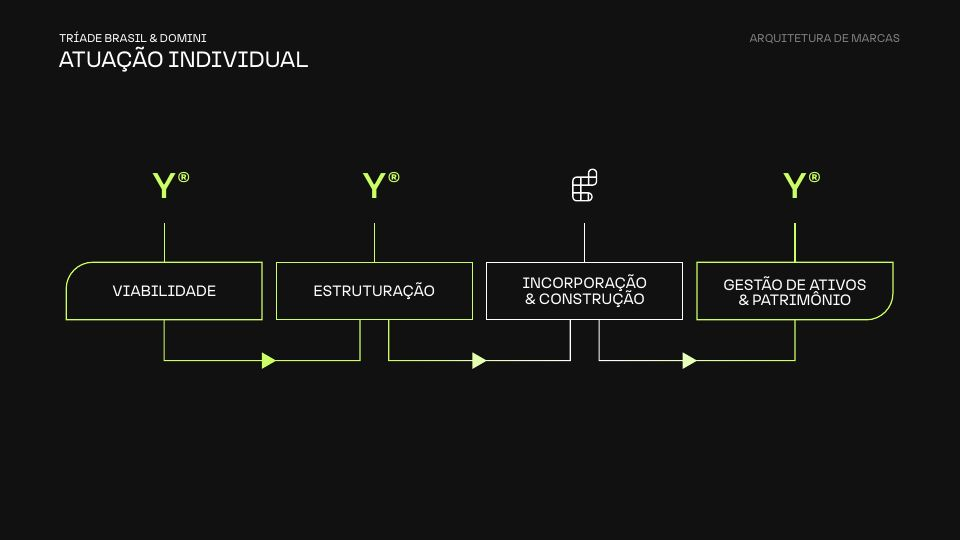
As duas empresas já declararam uma virada
Pela linha do tempo do próprio estudo, as duas marcas entram em 2026 numa fase nova. A presença pública ainda está na fase anterior.
Da primeira moradia à maturidade
- 2002–2016Fase 1 · custo-benefício. "Domini Incorporadora".
- 2017–2025Fase 2 · valor agregado. "Felicidade em metros quadrados", depois "Projetos de Vida".
- 2026 →Fase 3 · Maturidade. Médio e grande porte, alta renda, capital híbrido. A palavra escolhida: Identidade. Descritor novo: ainda não existe.
Do nascimento à emancipação
- 2018–2025Fase 1 · Nascimento. Consultoria e controladoria, comercial passivo, forte vínculo com a Domini.
- 2026 →Fase 2 · Emancipação. Gestão de ativos como produto principal, comercial ativo, carteira própria. A dor registrada: sair da sombra da Domini.
DominiA marca está uma fase atrás do negócio
- A Fase 3 segue assinando com o descritor da Fase 2.Cada fase trocou o descritor; a última ainda não trocou. Até o estudo estratégico repete o problema: no slide "Propósito" da Domini, logo depois de declarar a Fase 3, aparece "Projetos com propósito de vida", com a mesma foto da jovem no sofá que está na home do site.
- Três versões da marca circulando ao mesmo tempo.O manual vigente documenta a versão colorida (laranja, amarelo, vermelho, com os "arcos") e traz o aramado só como variação no fim. Site, Instagram e o estudo de arquitetura usam o aramado cinza. O portfólio em PDF ainda usa a colorida. Não há manual próprio da versão atual.
- O nome "Incorporadora" nunca saiu de cena.O e-mail é
@dominiincorporadora.com.br, e a apresentação comercial diz "a Domini Incorporadora". Hoje o domíniodominiincorporadora.com.brredireciona para o "projetos de vida", quando o mais coerente seria o contrário. - O tamanho do que vem pede outro patamar de marca.O pipeline apresentado soma 7 empreendimentos, cerca de 606 unidades e ~R$ 900 milhões de VGV até 2028: Alma Gramado, Alma Morro das Pedras, Ribeirão da Ilha, Senior Living, Office 405, Família Jardim e Jardim Campeche.
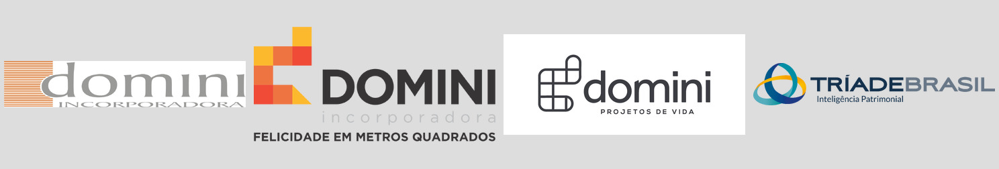
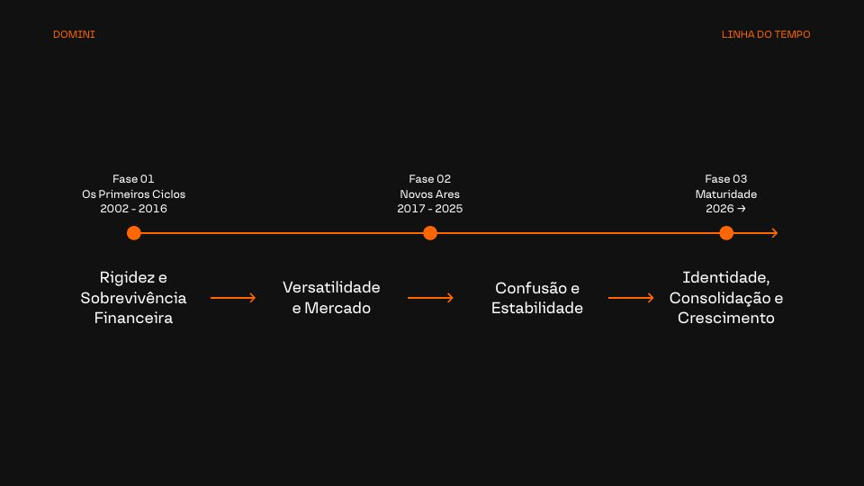
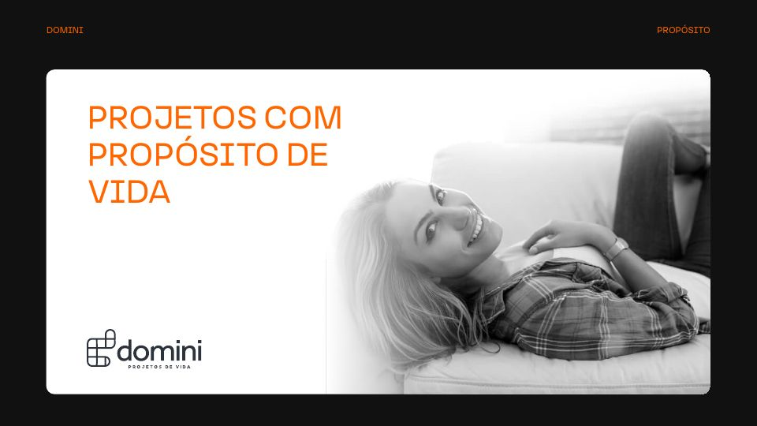
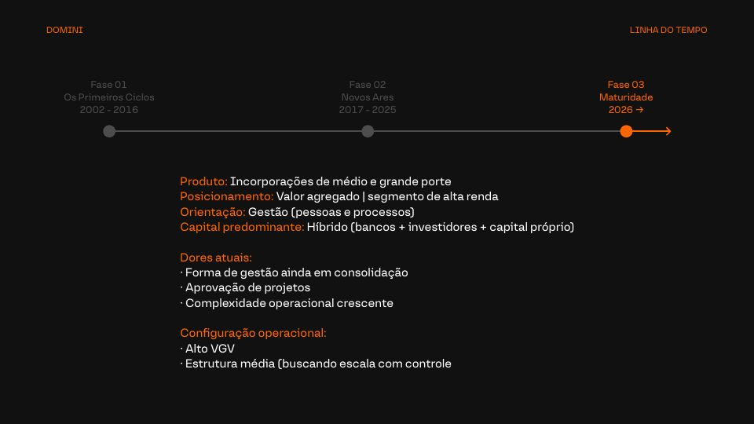
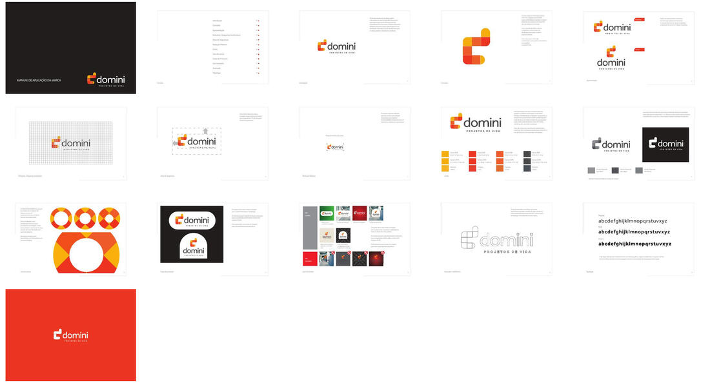
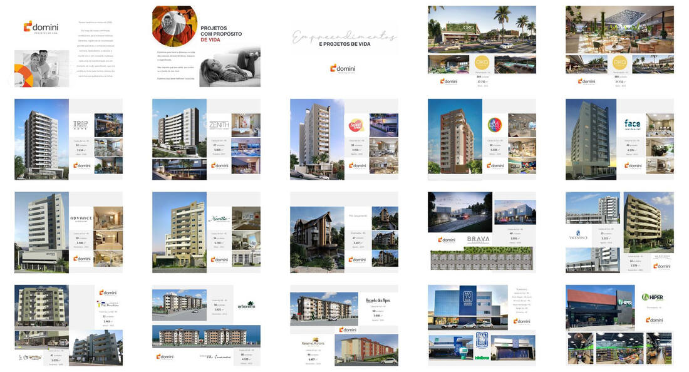
TríadePronta para se emancipar, mas sem sistema de marca e com a história emprestada
- O "manual" da Tríade são três telas do logo sobre três fundos.Não há tipografia, grid, regras de aplicação nem versões para cobrand. Para uma marca que vai ganhar comercial ativo e carteira de terceiros, é pouco.
- O institucional 2025 usa a história da Domini como se fosse da Tríade.Visualmente ele é bem resolvido, mas "23 anos de mercado" e "82 empreendimentos, 1.352 unidades, 235.863 m²" são os números do slide de dados gerais da Domini. O portfólio da Tríade lista Advance (Caxias, 2012), Sweet Home, Trip Home e o Alma Gramado, todos Domini, e a Tríade nasceu em 2018.
- Isso alimenta os cenários de confusão que vocês mesmos relataram.O corretor que pergunta se as duas são concorrentes e o cliente que não sabe se fala com a Tríade ou com a Domini estão no estudo como problemas. Com o endosso leve decidido, falta a regra de como uma marca cita o histórico da outra.
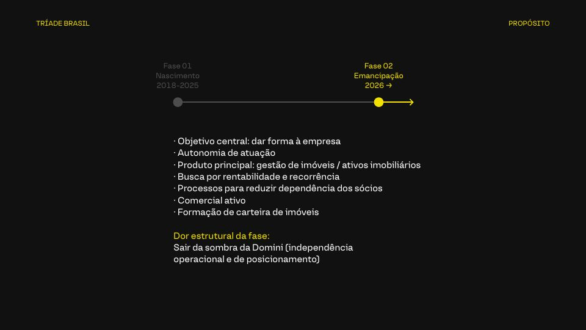
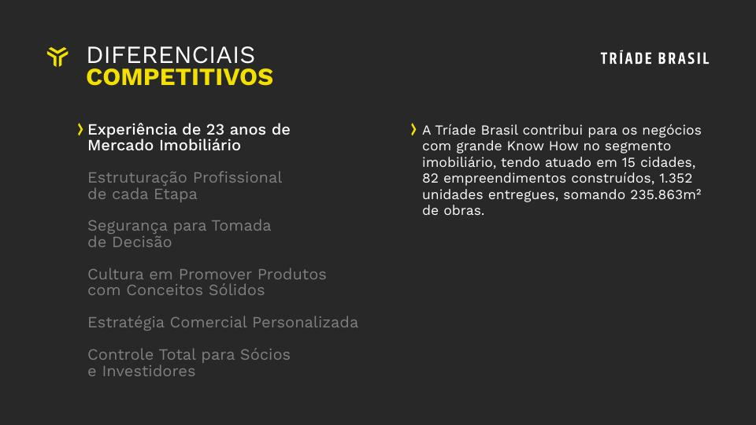
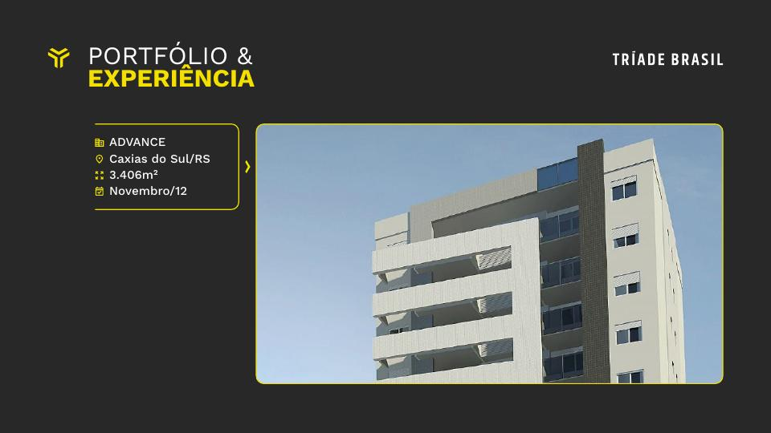
O ciclo que só existe no documento interno
O estudo de arquitetura conta o fluxo com clareza: viabiliza, estrutura, incorpora, constrói, gerencia ativos. Em público, ele aparece em pedaços, e os mesmos empreendimentos (Ekos, Oka, SKY 405) surgem nas duas marcas sem explicação de quem fez o quê.
Conceito, pesquisa, viabilidade, jurídico, sócios e captação. Entrega o projeto pronto.
Incorporação, obra, habite-se. Vende lançamento e estoque.
Gestão do ativo e locação corporativa. A Tríade abraça a Domini nas duas pontas.
As prioridades já estão escritas
Nas "Principais ações 2026", as duas empresas listam no topo, como primeira ação institucional, a arquitetura de marcas Domini e Tríade. Logo abaixo vêm: fortalecer a marca com plano de comunicação on e offline, elevar a experiência do cliente em contato com a marca, e planejar e contratar gestão de plataformas e redes sociais com foco institucional. A Tríade acrescenta foco em prospecção e em carteiras de locação fora dos imóveis da Domini.
Este diagnóstico olha para essa mesma lista a partir de fora: o que o mercado vê hoje, e o que precisa mudar para que ele veja o que vocês já decidiram ser.
Essência e narrativa estão sólidas. Falta a expressão.
Trabalhamos marca em três camadas: essência, narrativa e expressão. Olhando Tríade e Domini por essas lentes, o diagnóstico fica simples. As duas primeiras camadas estão bem resolvidas, sobretudo na cabeça de quem conduz o negócio, e boa parte delas já está registrada no estudo de arquitetura. O que não acompanhou foi a terceira.
Essência
Quem cada marca é e por que existe. Clara para os sócios e coerente com o momento de cada empresa.
Narrativa
Como cada uma se posiciona e como a Tríade envolve a Domini nas duas pontas do ciclo. Decidida e documentada como endosso leve + cobrand.
Expressão
Como tudo isso aparece: sites, redes, apresentações, padrões visuais. É aqui que o mercado ainda vê a versão anterior das duas marcas.
O próximo passo, portanto, é dar expressão ao que já foi construído, com respeito ao trabalho feito até aqui, para as duas marcas e com a mesma lógica de arquitetura.
O que a expressão precisa cobrir
Para Domini e para Tríade, cada uma no seu papel.
- Padrões visuais atualizados, com regras de assinatura, endosso e cobrand
- Redes sociais ajustadas por inteiro: bio, destaques e padrão visual do feed
- Sites reescritos e redesenhados à luz da arquitetura, com portfólio organizado por fase e papel
- Apresentação institucional de cada marca
- Apresentação comercial de cada marca, incluindo o material para imobiliárias
- Regra de histórico: como uma marca cita os números e o portfólio da outra
A base técnica por trás
Para que a expressão se sustente no digital.
- Domínios organizados, começando por inverter o redirect do
dominiincorporadora - Hospedagem e certificados de segurança padronizados para todas as marcas
- Redirecionamentos que preservem o histórico de busca
- Sites mantidos em infraestrutura ágil, pronta para novidades e ajustes